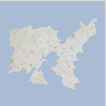
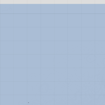
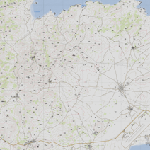

TrackPoint Tile Loading Test
Direct Tile Access Test
Tile: altis/0/0/0.png

Tile: altis/2/0/0.png

Tile: altis/2/1/1.png

Standard Leaflet Map Test
Load Standard Map
Load Altis Map
Load Simple Altis
Load Bounded Altis
Test Simple Init
Debug Info